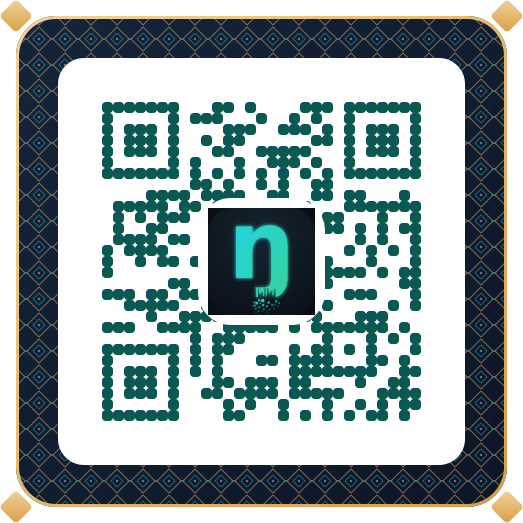

Choisis ta langue 🌍
LANGA est une plateforme communautaire où chaque langue s'enrichit des traductions et des voix de celles et ceux qui la parlent. Choisis la tienne, ou déclare-la si elle n'existe pas encore, pour que d'autres puissent l'enrichir avec toi.
Aucune langue ne correspond. Tu peux la déclarer ci-dessus.
➕ Déclarer une nouvelle langue
Elle deviendra aussitôt visible et enrichissable par toute la communauté.
Donne voix à ta langue 🎙️
Ta langue est créée ✓. Pour lui donner ses toutes premières voix, enregistre-toi en prononçant quelques mots de base. Vise au moins 5 mots, mais tu peux t'arrêter quand tu veux, car tout ce que tu enregistres est gardé.
Bienvenue 👋
Avant de commencer, renseigne ton profil. Ces informations servent à te créditer comme contributeur et à revenir vers toi si une traduction demande une précision. Elles sont enregistrées sur ton appareil : tu ne les saisiras qu'une seule fois. * obligatoire
🔒 Complète tous les champs obligatoires (marqués *) pour continuer.
Que veux-tu faire ? 👋
Choisis une activité pour commencer. Tu passeras de l'une à l'autre quand tu veux, grâce au menu en haut.
LANGA numérise nos langues d'Afrique, texte et voix. Le ngiemboon est la plus avancée, avec son clavier dédié ; d'autres langues sont déjà ouvertes et tu peux déclarer la tienne. Tout le monde peut y contribuer.
Traduire
🔒 Renseigne d'abord ton profil tout en haut (tous les champs marqués *) pour activer ce bouton.
🔒 Renseigne d'abord ton profil tout en haut (tous les champs marqués *) pour activer l'envoi.
L'envoi est automatique et redondant : chaque contribution est renvoyée jusqu'à ce qu'elle soit confirmée présente dans la base. Hors connexion, tout reste en sécurité sur l'appareil.
Explorer la bibliothèque
Consulte les traductions et transcriptions déjà partagées par la communauté, pour apprendre, écouter les prononciations, et repérer ce qui pourrait être amélioré. Chaque entrée montre son contexte : domaine, variante du village, rôle du contributeur.
À propos de LANGA
Dans les langues nguni, LANGA signifie « la lumière », et le mot évoque aussi « langue ». Son ambition est de donner une voix numérique à nos langues.
La vision : nos langues d'Afrique, texte et voix
LANGA est un projet ouvert à tous. Il rassemble les mots et les voix de nos langues pour bâtir ensemble les outils qui les font vivre, qu'il s'agisse de dictionnaires, de claviers ou d'intelligences artificielles qui les comprennent.
LANGA donne une voix numérique à nos langues d'Afrique. Le ngiemboon est aujourd'hui la langue la plus avancée, car il possède déjà son clavier dédié et le corpus le plus riche, mais la plateforme accueille plusieurs langues et chacun peut y ajouter la sienne. Où que tu sois, un simple téléphone ou ordinateur suffit pour y contribuer.
Pourquoi participer
Préserver
Chaque mot et chaque prononciation enregistrés aujourd'hui restent pour toutes les générations à venir
Outiller
Une langue présente dans le numérique reste vivante : traduction, clavier, intelligence artificielle
Ensemble
La langue appartient à sa communauté. Ta contribution en fait partie, quel que soit ton village
Trois façons de contribuer
Traduire
Donne la traduction de mots et de phrases entières (français ↔ ngiemboon)
Transcrire
Enregistre ta voix quand tu prononces les mots : un trésor à préserver
Explorer
Écoute, apprends et vote pour les meilleures améliorations

🐞 Suivi des bugs
Chaque bug est identifié, décrit, daté et suivi jusqu'à sa résolution. Tu peux signaler un problème : il rejoint la liste et tu suis son avancement (⏳ en attente → ✅ résolu).